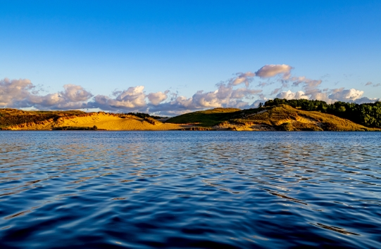

My Top 2
- Hamlin Lake
- Located in Ludington Michigan
- Home to:
- Kneeboarding
- Water Skiing
- Sand Dunes
- House of Flavors
- Puerto Plata
- Located in the Dominican Republic
- Home to:
- Ziplining
- Monkeys
- Snorkelling
- Authentic Cuisine
More on Hamlin Lake
Lake Hamlin is a dammed off portion of Lake Michigan. Because Michigan is full of similarly dammed lakes and is adjacent to multiple Great Lakes, Michigan recieves a significant amount of boats in comparison to other states in the area.